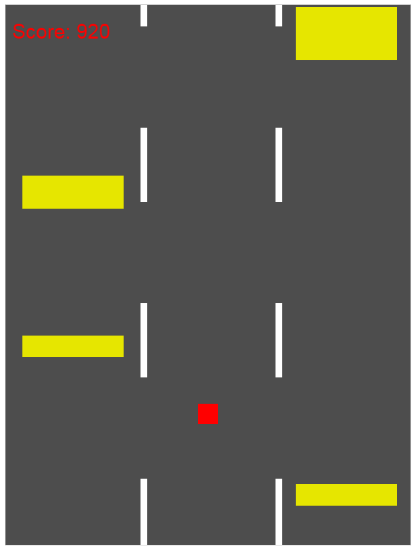
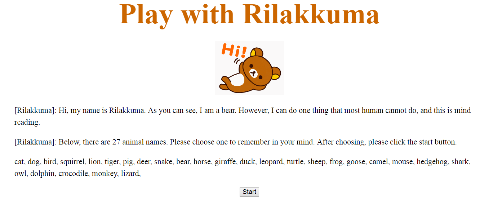

Si Yi Li
Education
- U4 McGill University student
- Major: Biology and Computer Science
- Minor: Pharmacology
Work and Researsh Interests
- Artificial intelligence
- Autonomous system
- Big data
- Bioinformatic
- Biomedical engineering
- Database
- Virtual reality
- Web design
Contact info
- E-mail: lisiyitoy@gmail.com
Professor-Vybihal's Lab
Objective
To develop the Knowledge Node Network of the AI in the Prometheus Project.
Time
From May 2017 to August 2017
Report
Researches in Biology
Javascript Project
Run Sonic

Run Sonic is a video game made with only javascript. Initially, Doctor Eggman is chasing Sonic. In order to help Sonic run away from Doctor Eggman, player has to type corresponding falling letter showing on the screen as fast as he or she can. The game is over when Doctor Eggman catches Sonic which means the player did not type right letter fast enough. To play the game, please click the image above.
Dodge on The Road
Dodge on The Road is another javascript video game. In this game, the player has to control the red square (left, right, up, down) to dodge every up coming obstacle: road lines and yellow rectangles. If the red square touch any of those obstacle, the game will terminate. To play the game, please click the image above.
CGI project
Play with Rilakkuma
In Play with Rilakkuma, the player has to choose to remember a name among 27 animal names at the beginning and answer the question on each step. At the end, Rilakkuma will tell the player which name the player has remembered at the beginning. This game is built by using the CGI concept. On each step, the answer from the player will be sent to a program written in Python in the server, and this program will analyze the answer in order to help Rilakkuma to figure out the right animal name the player had chosen to remember. To play the game, please click the image above.